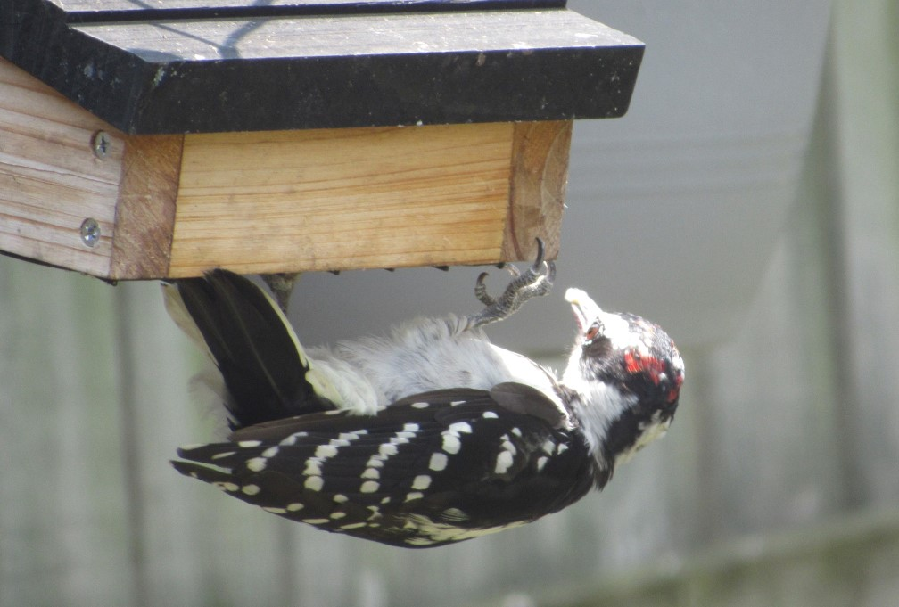
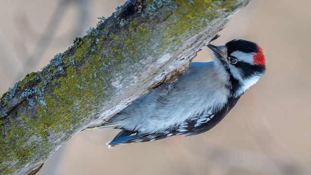

Downy Woodpecker


- Description
- The active little Downy Woodpecker is a familiar sight at backyard feeders and in parks and woodlots, where it joins flocks of chickadees and nuthatches, barely outsizing them. An often acrobatic forager, this black-and-white woodpecker is at home on tiny branches or balancing on slender plant galls, sycamore seed balls, and suet feeders. Downies and their larger lookalike, the Hairy Woodpecker, are one of the first identification challenges that beginning bird watchers master.
- Behavior
- An active woodpecker that moves quickly over tree trunks, branches, and stems of grasses and wildflowers, characteristically leaning against its stiffened tail feathers for support. Downy Woodpeckers move horizontally and downwards on trees much more readily than most other woodpeckers. You may also see them perched atop tall weeds such as goldenrod in late summer, hammering away at a plant gall to get at the larva inside. Occasionally hops on the ground for food. In spring you may see courtship displays in which males and females fly between trees with slow, fluttering wingbeats that look almost butterfly-like.
- Habitat
- Open woodlands, particularly deciduous woods and along streams. Also found in created habitats including orchards, parks, and suburbs. You may also find Downy Woodpeckers in open areas, where they can nest along fencerows and feed amid tall weeds.
- Diet
- Downy Woodpeckers eat mainly insects, including beetle larvae that live inside wood or tree bark as well as ants and caterpillars. They eat pest insects including corn earworm, tent caterpillars, bark beetles, and apple borers. About a quarter of their diet consists of plant material, particularly berries, acorns, and grains. Downy Woodpeckers are common feeder birds, eating suet and black oil sunflower seeds and occasionally drinking from hummingbird feeders.
Downy Woodpecker Call
Cool Facts
- In winter Downy Woodpeckers are frequent members of mixed species flocks. Advantages of flocking include having to spend less time watching out for predators and better luck finding food from having other birds around.
- Woodpeckers don’t sing songs, but they drum loudly against pieces of wood or metal to achieve the same effect. People sometimes think this drumming is part of the birds’ feeding habits, but it isn’t. In fact, feeding birds make surprisingly little noise even when they’re digging vigorously into wood.
- Downy Woodpeckers have been discovered nesting inside the walls of buildings.